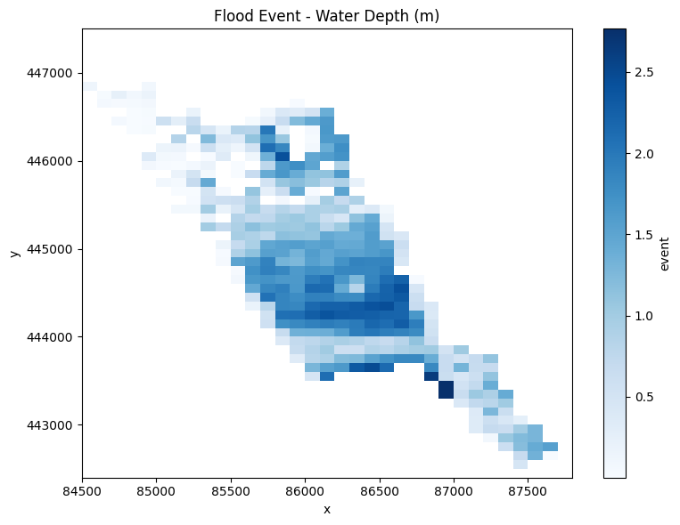
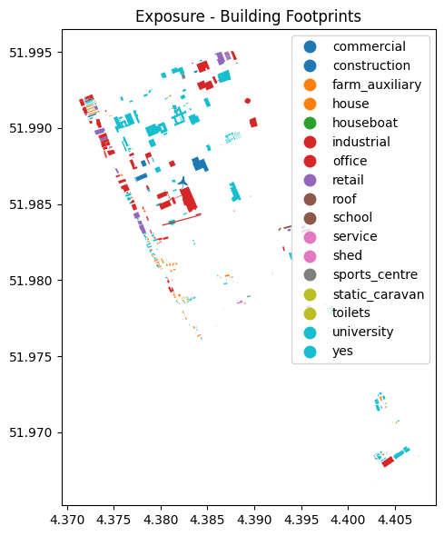
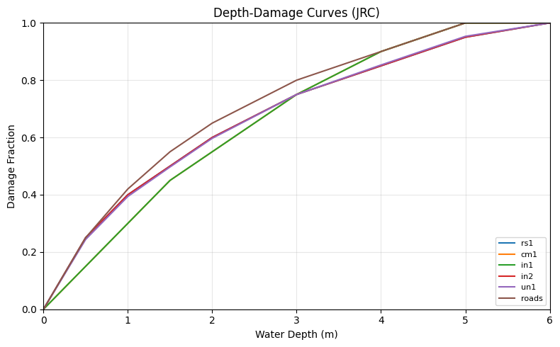
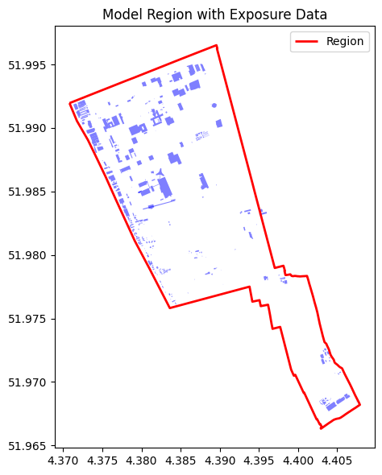

Exploring HydroMT-FIAT Data#
This example demonstrates how to explore and visualize the different data types used by HydroMT-FIAT: hazard, exposure, and vulnerability data.
We will use the built-in test data that ships with HydroMT-FIAT to inspect the expected formats and contents of each data type.
[1]:
# Imports
from pathlib import Path
import geopandas as gpd
import matplotlib.pyplot as plt
from hydromt import DataCatalog, log
from hydromt_fiat.data import fetch_data
log.initialize_logging()
2026-06-16 09:47:04,058 - hydromt - log - INFO - HydroMT version: 1.4.0
Fetch example data#
HydroMT-FIAT provides small example datasets for testing and demonstration. Let’s download the global and local test data.
[2]:
# Download test datasets
global_dir = fetch_data("global-data")
local_dir = fetch_data("test-build-data")
# Get region from the local data
region = gpd.read_file(Path(local_dir, "region.geojson"))
# Load the data catalogs
dc = DataCatalog(
data_libs=[
Path(global_dir, "data_catalog.yml"),
Path(local_dir, "data_catalog.yml"),
]
)
print(f"Available sources: {list(dc.sources.keys())}")
2026-06-16 09:47:04,063 - hydromt.hydromt_fiat.data.get - get - INFO - Requesting the 'global-data' file from the hydromt-fiat s3 bucket
2026-06-16 09:47:04,064 - hydromt.hydromt_fiat.data.get - get - INFO - Checking whether 'global-data.tar.gz' is already locally cached with correct hash
2026-06-16 09:47:04,065 - hydromt.hydromt_fiat.data.get - get - INFO - Existing file: 'global-data.tar.gz' matches the hash 917b3072e633fcdc2b61e2e7b1b51369
2026-06-16 09:47:04,067 - hydromt.hydromt_fiat.data.get - get - INFO - Unpacking the archive to /home/runner/.cache/hydromt-fiat/global-data
2026-06-16 09:47:04,074 - hydromt.hydromt_fiat.data.get - get - INFO - Requesting the 'test-build-data' file from the hydromt-fiat s3 bucket
2026-06-16 09:47:04,075 - hydromt.hydromt_fiat.data.get - get - INFO - Checking whether 'test-build-data.tar.gz' is already locally cached with correct hash
2026-06-16 09:47:04,077 - hydromt.hydromt_fiat.data.get - get - INFO - Existing file: 'test-build-data.tar.gz' matches the hash 73f0d8d82a1a70238a4f46673782553d
2026-06-16 09:47:04,077 - hydromt.hydromt_fiat.data.get - get - INFO - Unpacking the archive to /home/runner/.cache/hydromt-fiat/test-build-data
2026-06-16 09:47:04,118 - hydromt.data_catalog.data_catalog - data_catalog - INFO - Parsing data catalog from /home/runner/.cache/hydromt-fiat/global-data/data_catalog.yml
2026-06-16 09:47:04,368 - hydromt.data_catalog.data_catalog - data_catalog - INFO - Parsing data catalog from /home/runner/.cache/hydromt-fiat/test-build-data/data_catalog.yml
Available sources: ['jrc_curves', 'jrc_curves_link', 'jrc_curves_link_alt', 'jrc_damage', 'osm_amenity', 'osm_amenity_link', 'osm_buildings', 'osm_buildings_link', 'osm_landuse', 'osm_landuse_link', 'osm_roads', 'buildings', 'buildings_link', 'commercial_content', 'commercial_structure', 'curve1', 'curve2', 'exposure_grid_link', 'flood_event', 'flood_event_highres', 'industrial_content', 'industrial_structure', 'residential_content', 'residential_structure', 'unknown_content', 'unknown_structure']
1. Hazard Data#
Hazard data represents the flood event or risk scenario. It is stored as a raster dataset (typically GeoTIFF or NetCDF) with spatial dimensions (x, y) and values representing water depth (in meters).
Expected format#
Type:
RasterDataset(xarray.Dataset)Dimensions: x, y (spatial grid)
Values: Water depth in meters (or other hazard intensity)
CRS: Any projected or geographic CRS
[3]:
# Read hazard data from the catalog
hazard = dc.get_rasterdataset("flood_event")
print("Type:", type(hazard))
print("\nDataset info:")
print(hazard)
2026-06-16 09:47:04,385 - hydromt.data_catalog.sources.data_source - data_source - INFO - Reading flood_event RasterDataset data from /home/runner/.cache/hydromt-fiat/test-build-data/floodmaps/event.tif
Type: <class 'xarray.core.dataarray.DataArray'>
Dataset info:
<xarray.DataArray 'event' (y: 51, x: 33)> Size: 7kB
dask.array<getitem, shape=(51, 33), dtype=float32, chunksize=(51, 33), chunktype=numpy.ndarray>
Coordinates:
* y (y) float64 408B 4.474e+05 4.474e+05 ... 4.426e+05 4.424e+05
* x (x) float64 264B 8.455e+04 8.465e+04 ... 8.765e+04 8.775e+04
spatial_ref int64 8B 0
Attributes:
AREA_OR_POINT: Area
_FillValue: nan
source_file: event.tif
[4]:
# Visualize the flood map
fig, ax = plt.subplots(figsize=(8, 6))
hazard.plot(ax=ax, cmap="Blues")
ax.set_title("Flood Event - Water Depth (m)")
ax.set_xlabel("x")
ax.set_ylabel("y")
plt.tight_layout()
plt.show()

2. Exposure Data#
Exposure data represents the assets at risk (e.g., buildings, infrastructure). It is stored as a vector dataset (GeoDataFrame) with geometries and attributes.
Expected format#
Type:
GeoDataFrame(geopandas)Geometry: Point, Polygon, or MultiPolygon
Required columns:
geometry: spatial featuresA column indicating the object/building type (e.g.,
building,occupancy_type)
CRS: Any (will be reprojected to match model)
[5]:
# Read exposure data from the catalog
exposure = dc.get_geodataframe("osm_buildings", geom=region)
print("Type:", type(exposure))
print(f"\nNumber of features: {len(exposure)}")
print(f"Geometry type: {exposure.geom_type.unique()}")
print(f"CRS: {exposure.crs}")
print(f"\nColumns: {list(exposure.columns)}")
print("\nHead:")
exposure.head()
2026-06-16 09:47:04,602 - hydromt.data_catalog.sources.data_source - data_source - INFO - Reading osm_buildings GeoDataFrame data from /home/runner/.cache/hydromt-fiat/global-data/building
2026-06-16 09:47:04,603 - hydromt.hydromt_fiat.drivers.osm_driver - osm_driver - INFO - Retrieving building data from OSM API
2026-06-16 09:47:04,746 - hydromt.hydromt_fiat.drivers.osm_driver - osm_driver - INFO - Number of ['building'] items found from OSM: 578
Type: <class 'geopandas.geodataframe.GeoDataFrame'>
Number of features: 578
Geometry type: <ArrowStringArray>
['Polygon']
Length: 1, dtype: str
CRS: epsg:4326
Columns: ['building', 'geometry']
Head:
[5]:
| building | geometry | |
|---|---|---|
| 0 | university | POLYGON ((4.3815 51.99085, 4.38153 51.99086, 4... |
| 1 | university | POLYGON ((4.37676 51.99017, 4.37664 51.99013, ... |
| 2 | university | POLYGON ((4.37836 51.99, 4.37836 51.99, 4.3792... |
| 3 | yes | POLYGON ((4.38615 51.99349, 4.38612 51.99353, ... |
| 4 | retail | POLYGON ((4.37769 51.98357, 4.37814 51.98367, ... |
[6]:
# Visualize exposure data
fig, ax = plt.subplots(figsize=(8, 6))
exposure.plot(ax=ax, column="building", legend=True, markersize=5)
ax.set_title("Exposure - Building Footprints")
plt.tight_layout()
plt.show()

3. Vulnerability Data#
Vulnerability data defines the relationship between hazard intensity (e.g., water depth) and the fraction of damage. These are typically depth-damage curves.
Expected format#
Type:
DataFrame(pandas)Structure: Tabular CSV with:
Index or column for depth values (in meters)
Columns for each damage function (values: 0.0 to 1.0 damage fraction)
Companion: A linking table that maps object types to curve identifiers
[7]:
# Read vulnerability curves from the catalog
vuln_curves = dc.get_dataframe("jrc_curves")
print("Type:", type(vuln_curves))
print(f"\nShape: {vuln_curves.shape}")
print(f"\nColumns (first 10): {list(vuln_curves.columns[:10])}")
print("\nHead:")
vuln_curves.head()
2026-06-16 09:47:04,980 - hydromt.data_catalog.sources.data_source - data_source - INFO - Reading jrc_curves DataFrame data from /home/runner/.cache/hydromt-fiat/global-data/vulnerability/jrc_damage_functions.csv
Type: <class 'pandas.DataFrame'>
Shape: (1003, 44)
Columns (first 10): [0, 1, 2, 3, 4, 5, 6, 7, 8, 9]
Head:
[7]:
| 0 | 1 | 2 | 3 | 4 | 5 | 6 | 7 | 8 | 9 | ... | 34 | 35 | 36 | 37 | 38 | 39 | 40 | 41 | 42 | 43 | |
|---|---|---|---|---|---|---|---|---|---|---|---|---|---|---|---|---|---|---|---|---|---|
| 0 | continent | europe | north america | central america | south america | asia | africa | oceania | global | europe | ... | north america | central america | south america | asia | africa | oceania | global | europe | asia | global |
| 1 | curve | rs1 | rs1 | rs1 | rs1 | rs1 | rs1 | rs1 | rs1 | cm1 | ... | un1 | un1 | un1 | un1 | un1 | un1 | un1 | roads | roads | roads |
| 2 | 0 | 0 | 0 | 0 | 0 | 0 | 0 | 0 | 0 | 0 | ... | 0 | 0 | 0 | 0 | 0 | 0 | 0 | 0 | 0 | 0 |
| 3 | 0.01 | 0.005 | 0.01 | 0.0098 | 0.0098 | 0.0066 | 0.0044 | 0.0096 | 0.00744 | 0.003 | ... | 0.0096 | 0.0099 | 0.0099 | 0.0067 | 0.0046 | 0.0093 | 0.0074 | 0.005 | 0.004288738 | 0.004644369 |
| 4 | 0.02 | 0.01 | 0.02 | 0.0196 | 0.0196 | 0.0132 | 0.0088 | 0.0192 | 0.01488 | 0.006 | ... | 0.0193 | 0.0199 | 0.0199 | 0.0133 | 0.0092 | 0.0186 | 0.0149 | 0.01 | 0.008577476 | 0.009288738 |
5 rows × 44 columns
[8]:
# Read the linking table
vuln_link = dc.get_dataframe("jrc_curves_link")
print("Linking table:")
vuln_link.head(10)
2026-06-16 09:47:05,008 - hydromt.data_catalog.sources.data_source - data_source - INFO - Reading jrc_curves_link DataFrame data from /home/runner/.cache/hydromt-fiat/global-data/vulnerability/jrc_damage_functions_linking.csv
Linking table:
[8]:
| object_type | impact_type | curve | impact_subtype | |
|---|---|---|---|---|
| 0 | residential | damage | rs1 | structure |
| 1 | commercial | damage | cm1 | structure |
| 2 | industrial | damage | in1 | structure |
| 3 | unknown | damage | un1 | structure |
| 4 | residential | damage | rs1 | content |
| 5 | commercial | damage | cm1 | content |
| 6 | industrial | damage | in2 | content |
| 7 | unknown | damage | un1 | content |
[9]:
# Plot a few vulnerability curves
fig, ax = plt.subplots(figsize=(8, 5))
# Alter a bit for plotting
vuln_plot = vuln_curves.iloc[:, vuln_curves.iloc[0, :] == "europe"]
vuln_plot[0] = vuln_curves[0]
vuln_plot.columns = vuln_plot.loc[1, :]
vuln_plot.drop([0, 1], inplace=True)
vuln_plot = vuln_plot.astype(float)
# Select a few curves to plot
for col in vuln_plot.columns[:-1]:
ax.plot(vuln_plot["curve"], vuln_plot[col], label=col)
# Set extra attributes
ax.set_xlabel("Water Depth (m)")
ax.set_ylabel("Damage Fraction")
ax.set_title("Depth-Damage Curves (JRC)")
ax.legend(loc="lower right", fontsize=8)
ax.set_xlim(0, 6)
ax.set_ylim(0, 1)
ax.grid(True, alpha=0.3)
plt.tight_layout()
plt.show()

4. Region Data#
A region defines the spatial extent for model building. It is a simple polygon geometry (GeoJSON or similar) that clips all data to the area of interest.
[10]:
# Read region
print(f"Region CRS: {region.crs}")
print(f"Region bounds: {region.total_bounds}")
# Plot region with exposure overlay
fig, ax = plt.subplots(figsize=(8, 6))
region.boundary.plot(ax=ax, color="red", linewidth=2, label="Region")
exposure.plot(ax=ax, color="blue", alpha=0.5, markersize=2, label="Buildings")
ax.set_title("Model Region with Exposure Data")
ax.legend()
plt.tight_layout()
plt.show()
Region CRS: EPSG:4326
Region bounds: [ 4.37080995 51.96631641 4.40791077 51.99651987]

Summary#
Data Type |
Format |
HydroMT Type |
Key Properties |
|---|---|---|---|
Hazard |
GeoTIFF, NetCDF |
|
Spatial grid, water depth values |
Exposure |
GeoPackage, FlatGeobuf, GeoJSON |
|
Vector geometries with attributes |
Vulnerability |
CSV |
|
Depth-damage curves + linking table |
Region |
GeoJSON, GeoPackage |
|
Single polygon boundary |
For more details on each data type, see the data section of the user guide.